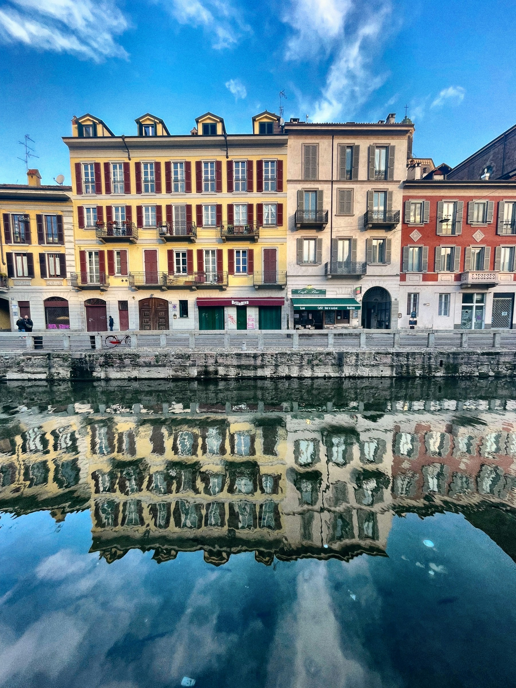
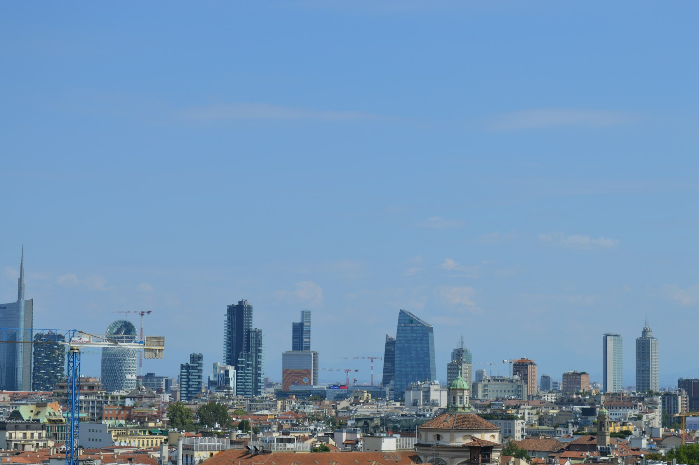
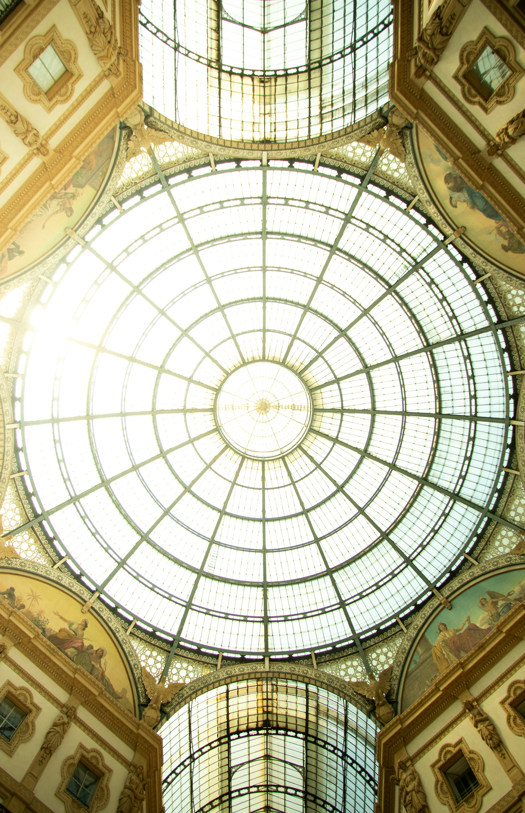

Milan Italy
Milan Taxi & Private Transfers
Milan is a city of appointments: flights to catch, meetings to reach, shops and galleries to visit, a station to connect through. If you would like a private transfer arranged around your day, whether from an airport, between hotels and the centre, or on to another Italian city, send us the details. We confirm what we can arrange once we see your journey; Milan is not yet listed as a confirmed service area.
Getting around Milan
A City Built Around Where You Need to Be Next
Visitors to Milan rarely have one destination. Most days chain together a few fixed points, and the useful question is how to move between them without losing the thread. These are the journeys people most often ask about.
- 01
Hotel transfers
Between your hotel and the airport, station, or wherever the day begins. In a city with many hotels near busy areas, the exact entrance helps.
- 02
Airport journeys
Milan's airports sit outside the city, so the ride to or from one is often the longest leg of a trip. Airport transfers explains what to include.
- 03
Business appointments
Offices, showrooms and exhibition venues come with a time you cannot move. Give us the arrival time first and the plan works backwards from it.
- 04
Shopping and sightseeing
A day in the fashion streets or around the cathedral is mostly walking, with a ride at either end. See city transfers.
- 05
Onward travel
From Milan to another city or region, covered under long-distance transfers.
Airport transfer enquiries
Planning a Journey To or From a Milan Airport
These are the airports travellers commonly mention for Milan. They are examples of enquiries, not a confirmation that we serve each one. Which airports we can serve is confirmed when you send your request.
- MXPMilan Malpensa
- LINMilan Linate
- BGYBergamo Orio al Serio
What to include in an airport enquiry
- Which airport, and whether you are arriving or departing
- Your flight number, if you have one, and the date and time
- Your hotel or address in Milan, with the full name and street
- How many passengers and how much luggage
We do not describe pickup procedures, flight monitoring, waiting allowances or prices here; those are agreed with you for your journey.
Milan's places
The Places Travellers Ask About
Milan's centre is dense, and old streets and busy squares do not always allow vehicles to stop where you would like. We make no promise of direct drop-off at any landmark; tell us where you want to be and we will agree a sensible meeting point.


- Duomo & Piazza del Duomo
- The cathedral and its square are the centre of most visits. Crowds and pedestrian areas make a nearby meeting point more realistic than the doorstep.
- Galleria Vittorio Emanuele II
- A covered arcade of shops and cafés beside the Duomo, entered on foot. Many visitors combine it with the cathedral in one outing.
- Brera
- A quieter district of narrow streets, galleries and restaurants, popular for evenings out. A named street or venue is the best pickup description.
- Castello Sforzesco
- The castle and Parco Sempione to its rear, a common half-day stop between the centre and the western districts.
- Navigli
- The canal district, lively in the evening, where visitors often need a ride back to their hotel late in the day.
- Milano Centrale
- The main railway station, where many visitors arrive or leave. Name the entrance or side you will use, and your train time. See the FAQ below on station pickups.
- Business & exhibition areas
- Offices, towers and trade-fair venues across the city. Give the exact venue name and the time you need to arrive.

Who travels to Milan
Business and Leisure, Often on the Same Trip
Milan draws people for work and for pleasure, and many do both. What you need from a transfer shifts with the trip, so tell us which kind of day you are planning.
- Business visitors
- Fixed arrival times, hotel to venue, venue to station. Tell us the time you need to be there.
- Couples
- Evenings in Brera or Navigli and a ride back, or a day between the galleries and the shops.
- Families
- Children, luggage and a lot to carry. Mention a child seat in your request; see group transfers.
- Tourists
- A first visit usually means the cathedral, the arcade and a station connection. A simple plan avoids the guesswork.
Beyond Milan
When the Journey Continues
If your plans take you from Milan to another Italian destination, you can enquire about a private journey for the whole route. Name the place, the date and the number of people, and we will tell you whether we can arrange it.
We do not promise particular routes, journey times or availability on this page, and we show no prices. See long-distance transfers for how longer journeys are arranged, and our other destinations to compare.
Preparing your request
Plan Your Milan Transfer Request
The more exact your request, the faster we can say what is possible. In a city where meeting points and timings matter, these details do the most work.
- Exact pickup and destinationA hotel name and address, a venue, or the station entrance, not just "the centre".
- Date and preferred timeWhen you want to be collected, or when you must arrive.
- Passenger countAdults and children, so the right arrangement can be suggested.
- Luggage requirementsBags, plus anything large. We do not state capacities, so be specific.
- Flight or train detailsNumber and time, when the journey connects with one.
- Special requirementsChild seat, accessibility needs or access notes for the pickup.
Questions
Milan Transfer Questions
How can I request a taxi or private transfer in Milan?
Use the booking page: choose a service type, enter your pickup, destination, date, time and passengers, and send it. We review it and contact you with the next steps. Milan is not yet listed as a confirmed service area, so we confirm what we can arrange once we see your journey.
Which details should I provide for an airport transfer?
The airport and whether you are arriving or departing, your flight number if you have one, the date and time, your hotel or address in Milan, the number of passengers and your luggage. Which airports we can serve is confirmed when you send your request. See airport transfers.
Can I enquire about transport to Milan's main attractions?
Yes. Tell us where you are starting and which attraction, such as the Duomo, the Galleria or Castello Sforzesco. Busy central areas may have specific access arrangements, so the meeting point may be nearby rather than at the doorstep. A transfer does not include a guide or tour.
Can I request a transfer between Milan and another Italian city?
You can ask. Name the destination, the date and the number of people, and we will confirm whether we can arrange it. Routes shown on our pages are examples, not confirmed routes. See long-distance transfers.
How do I ask about a route-specific price?
Send the route through the booking page or ask through the contact page. The website does not show an automatic estimated fare, and we do not publish prices or journey times for routes here. Pricing is confirmed for your specific trip.
What information should a group include in its request?
The total number of passengers, how many are children if relevant, the luggage you are bringing, and one contact person who will be reachable on the day. We do not list vehicle models or capacities. See group transfers.
Can I enquire about a pickup near Milano Centrale?
Yes. Name the station and the entrance or side where you want to be collected, and add your train time. Whether a particular pickup point can be used is confirmed with you when we arrange the journey; we make no promise of a specific spot.
Where can I see the other destinations you list?
The service areas page lists our destinations, and there is a dedicated page for Rome.

Your Milan Journey Starts With the Details
Share your route and travel details, and we will confirm what we can arrange.